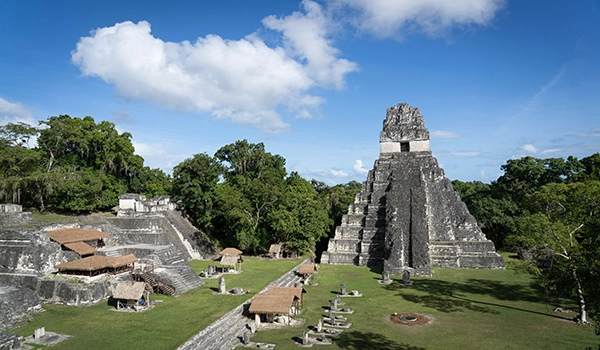

Cultural Diversity in Guatemala
A Land of Many Cultures, Voices and traditions

Guatemala is one of the most culturally diverse countries in Central America. Its population reflects centuries of history shaped by Indigenous civilizations, Spanish colonization, and communities that developed along the Caribbean coast.
Four major cultural groups are commonly recognized in Guatemala today: the Ladinos, Maya, Garífuna, and Xinka. Each group has its own history, traditions, and cultural identity. Differences in language, clothing, music, and social traditions illustrate the richness of Guatemala’s cultural heritage.
This website explores these communities and highlights how they contribute to the cultural landscape of the country.

Ladinos
Born from the meeting of two worlds, the Ladino identity shaped modern Guatemala, its cities, politics, and culture. Discover the community at the center of the nation's history.

Maya
Builders of pyramids, keepers of ancient calendars, weavers of vibrant textiles, the Maya are Guatemala's largest Indigenous people and one of the world's greatest civilizations. Explore a culture that has survived for thousands of years.

Garifuna
From the Caribbean islands to the shores of Guatemala, the Garífuna carry a culture born from African, Indigenous, and European roots. Feel the rhythm of their drums and discover a community like no other.

Xinca
One of Guatemala's most ancient and least known peoples, the Xinka have called the southeastern highlands home for centuries. Learn about their unique language, their fight for recognition, and their journey to preserve what remains.